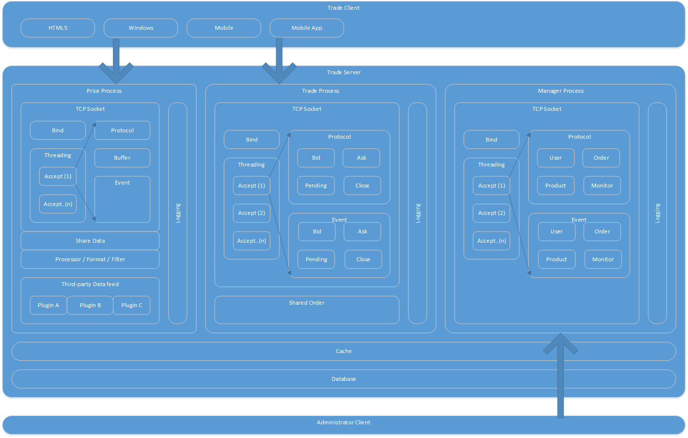

金融交易系统设计思路
版权声明
转载请与作者联系，转载时请务必标明文章原始出处和作者信息及本声明。
|
|
|
微信扫描二维码进入 Netkiller 微信订阅号 QQ群：128659835 请注明“读者” |


2017-06-16
1. 架构纵览
1.1. 网站部分
1.1.1. 网站前端
待续...
1.1.2. 网站后台
待续...
1.2. 交易服务器部分
 |
可以简单的讲交易服务器分为三大块：报价，交易，管理。
|  |
2. 应用层防火墙
什么是七层防火墙，7层防火墙是在应用层工作的防火墙,它实时监控保护系统各个方面的行为。保护系统的安全运行,有效的保证系统的正常运行,有网络系统安全中有良好的表现.
这里设计应用层防火墙是用来弥补3/4层防火墙的不足，我们的目的是保护我们服务器安全。
- IP地址黑白名单，地域区域封锁，用于阻止某些IP地址访问我们的服务器
- 协议匹配，如果与应用服务器建立连接后，发送的协议是错误的，我们视为嗅探行为
- 交易频率控制，例如禁止机器人高频交易
- 成交范围，当用户送出的订单，价格不再我们的报价范围，视为虚假交易
- Token 验证，针对RESTFul等接口
- 数据收集（TCP/IP，在线人数，各种协议操作人数，状态...）收集这些数据用于服务器监控。
- 扩展插件，我们希望这个防火墙能够通过编写插件扩展功能。
3. 集群实现
引入集群与分布式概念，传统C/S服务器软件设计都是运行在一台服务器上的，只能通过垂直扩展（升级硬件，如中央处理器，内存，硬盘），无法实现水平扩展（横向增加节点扩展服务器的并行处理性能）。
另外一个问题是传统软件任何更新都需要重启，重启已经不适合互联网时代。所以软件升级，配置文件变更，我们要从设计的角度解决重启的问题，最终我们要实现7*24小时不间断运行。
最后是异构系统的支持与多语言支持，互联网云时代，任何一个系统不可能采用一种语言开发，通常是多个语言混合使用，取各种语言的有点。所以设计交易系统我们要考虑不同操作系统的差异与不同语言的通信。
- 负载均衡
- 横向扩展，在不停机，不影响在线用户的情况下，动态增加或移除节点
- 节点健康状态检查
- 故障转移
- 双活，多活支持
4. Data feed 报价系统的设计
Data feed 是报价系统，主要的功能是为用户提供实时报价。
- 第三方数据接入
- 数据处理
- 数据送出
首先从第三方取得价格数据，这些数据源的对接方式，数据格式，频率，所提供的产品类目均不同。所以我们需要为分别为各种第三方数据源写插件对接他们的服务，插件的功能包括对数据的格式化，栏位调整等等，经过格式化处理后，输出内容满足我们的后续使用。
第二步是数据处理，为此我们需要创建一个分组，每个组中可以独立设置产品种类，报价频率，价格范围，点差以及条件过滤。因为来自多个插件的数据报价速度不同，产品也可能存在重复，所以我们需要合并/拆分的功能，以满足我们需要的数据，例如A、B、F、K几个产品在来自某个插件，C、D、E 产品来自另一个插件。
第三步数据送出，将整理好的数据发送给用户，展示在用户的交易终端中。我们提供多种数据格式，以满足异构系统与各种编程语言。
5. 核心交易系统的设计
交易系统的核心就是处理订单，开仓，平仓，挂单等等。下图展示了订单处理的内部模型。

5.1. 协议部分
客户端需要与服务器端交互，就需要通信协议，通信方式有两种，一种是二进制协议，另一种是纯文本协议。
互联网早期主要使用二进制协议，因为二进制协议体积小，占用带宽少，传输效率高。二进制协议通常使用C/C++结构体作为数据结构，这种方式的有点是开发简单，缺点是不能直接阅读协议，并且与其他语言通信不灵活。
随着网络提速，解决了带宽问题，于是出现了纯文本的协议，例如 HTTP、FTP、SMTP、POP3。这种协议可直接阅读，大大提高了开发效率与开发难度，调试起来也极为方便，使用telnet就可以完成复杂也些的调试。
互联网云计算与大数据的提出，大家有意识到文本协议的开销，于是二进制协议回归，同时纯文本协议也在减肥。为了解决开发难度，同事保证开发效率，序列化诞生了，序列化分为两派，一派是二进制，另一派是纯文本。
无论是二进制还是纯文本序列化，操作十分简单只有encode/decode两种操作方式，可以在任何语言中完成encode或decode操作，真正实现了跨语言，跨平台，所以交易通信协议这块我们采用序列化替代结构体。
我们提供了多种协议供用户选择，协议转换后对应后面的Trade Service
通过文本协议访问
{"status":true, "error":0}
通过二进制协议访问
82 A6 status C3 A6 error 00
通过XML协议访问
<xml> <status>true<status> <error>0<error> </xml>
协议与服务是关系对象映射，例如上面的协议对应Class文件
class Status {
private status;
private error;
}
5.2. 订单处理
这里开始涉及分布式软件的开发，分布式软件开发核心就是集中配置，分布式锁，节点分配，健康检查。
为了实现双活，负载均衡，我们首先要将订单持久化，这样掉电，死机，崩溃等故障，能保证其他节点上的服务器订单是同步的。
为了同意调配所有节点，我们的系统配置是集中管理的。
订单处理需要使用分布式锁，流程是申请锁，操作订单，释放锁。锁必须设置一个超时时间，这样一旦某个节点申请了锁，同时这个节点挂了，那么锁就一直不释放，其他节点就无法操作该订单，所以需要一个超时时间用于锁的自释放。注意：锁是针对订单的，可以称为行级锁。
定点采用事件触发的方式，满足条件即出发操作。
6. 管理员控制台的设计
通常交易系统有两个控制台，分别是Adminstrator与Manager，Adminstrator是给运维人员使用，用于服务器配置，例如权限分配，性能监控，日志查看等等。Manager 是针对运营人员，主要共的功能客户管理，交易品种管理，订单管理等等
6.1. Adminstrator
待续...
6.2. Manager
待续...